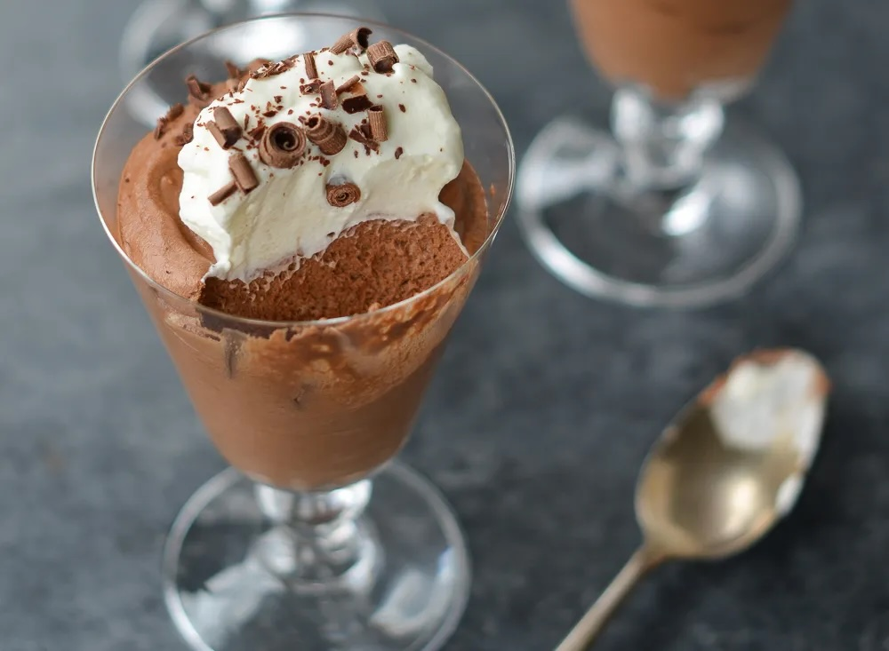

Chocolate Mousse

Desciption
This classic chocolate mousse is light yet intensely chocolate. Don't be fooled by the French name — it's quick and easy to make!
Prep Time: 20 mins | Total Time: 20 mins + 2 hours to chill
Ingredients
- 3 tablespoons unsalted butter
- 6 ounces semisweet chocolate, best quality
- 3 large eggs, at room temperature, yolks and whites separated
- 1/2 teaspoon cream of tartar
- 1/4 cup plus 2 tablespoons sugar
- 1/2 cup heavy cream, cold
- 1/2 teaspoon vanilla extract
For Serving
- 1/2 cup heavy cream, cold
- 2 teaspoons sugar
- Chocolate shavings
Steps
- Place the butter in a medium microwave-safe bowl. Break the chocolate into small pieces directly into the bowl. Microwave it in 20-second intervals, stirring between each bout of heat, until the chocolate is about 75% melted. Stir, allowing the residual heat in the bowl to melt the chocolate completely. Let the mixture cool for a few minutes, then whisk in the egg yolks one at a time, mixing until smooth after each addition. Set aside.
- In the bowl of a stand mixer or electric hand mixer, beat the egg whites on medium-high speed until foamy. Add the cream of tartar and beat until soft peaks form (the peaks should be just starting to hold, and will melt back into themselves after a second). Gradually beat in ¼ cup of the sugar and continue beating until stiff peaks form (the peaks will stand straight up when the beaters are lifted from the mixture). Using a large rubber spatula, fold the egg white mixture into the chocolate mixture until uniform. Set aside.
- In another bowl, beat the heavy cream on medium-high speed until it begins to thicken up. Add the remaining 2 tablespoons of sugar and the vanilla and continue beating until the cream holds medium peaks (when you lift the beaters or whisk out of the bowl, the peaks will slightly droop down, but they won't lose their shape entirely). Fold the whipped cream into the chocolate mixture. Be sure it is fully incorporated but don't mix any more than necessary. Divide the mousse between 6 individual glasses, cover, and chill until set, at least 2 hours.
- Up to a few hours before serving, whip the cream until it begins to thicken up. Add the sugar and whip to medium peaks. Dollop the whipped cream over the mousse and top with chocolate shavings.